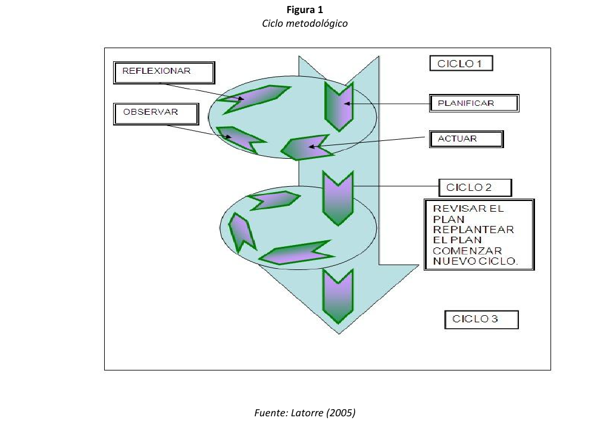
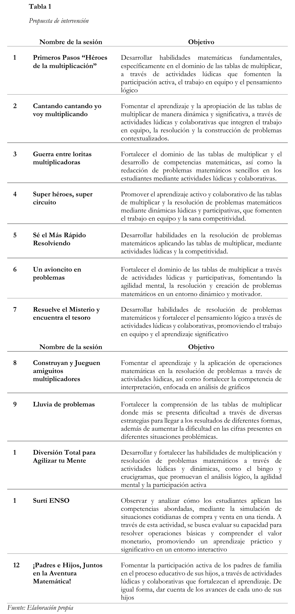
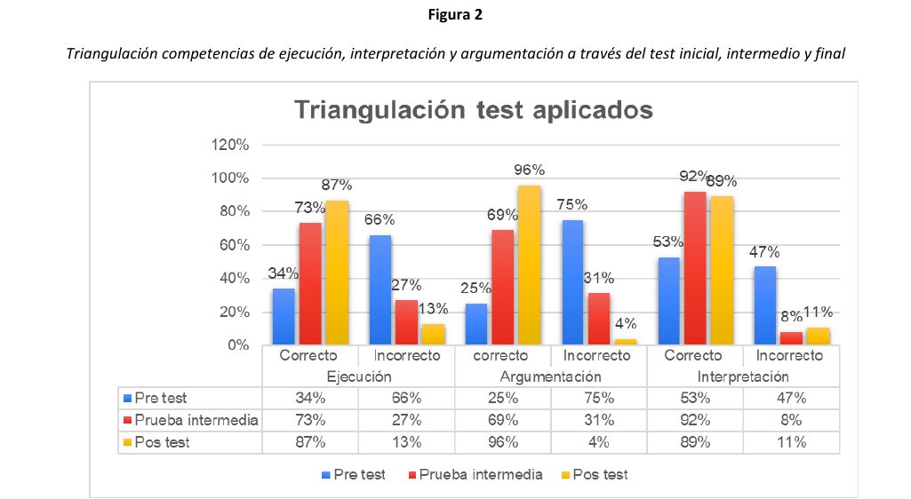

Impacto de la lúdica en la resolución de problemas multiplicativos
The impact of playful learning on multiplicative problem-solving
La presente investigación tuvo como objetivo analizar el impacto de la integración de enfoques lúdicos en la resolución de problemas que involucran el uso de las tablas de multiplicar en los estudiantes de grado tercero dos de la Escuela Normal Superior Oiba (ENSO). La investigación se sustenta en Alcedo y Chacón (2011) y Huizinga (1987), quienes promueven el uso de enfoques lúdicos en el aprendizaje. Asimismo, Pólya (1978), citado por Leal y Anderson (2015), destaca la importancia de la resolución de problemas en la enseñanza de la matemática. Se empleó un enfoque cualitativo con un diseño de investigación basado en Kemmis & Mc Taggart (1989), citados por Latorre (2005). A partir de estos referentes, se diseñó y aplicó una secuencia didáctica (Díaz Barriga, 2013), con el propósito de implementar los enfoques lúdicos para fortalecer habilidades matemáticas y disminuir la negativa de los estudiantes frente el área, donde se pudo evidenciar una mejora significativa en las competencias de interpretar, ejecutar y argumentar, consideradas como básicas en el área además de despertar y captar el interés de gran parte de los estudiantes.
Palabras clave: resolución de problemas, enfoques lúdicos, multiplicación, aprendizaje significativo, pensamiento numérico.
The purpose of this research was to analyze the impact of the integration of playful approaches in problem solving involving the use of multiplication tables in third grade two students of the Escuela Normal Superior Oiba (ENSO). The research is supported by Alcedo and Chacón (2011) and Huizinga (1987), who promote the use of ludic approaches in learning. Likewise, Pólya (1978), cited by Leal and Anderson (2015), highlights the importance of problem solving in mathematics teaching. A qualitative approach was used with an action research design based on Kemmis & Mc Taggart (1989), cited by Latorre (2005). From this, a didactic sequence was designed and applied (Díaz Barriga, 2013), with the purpose of implementing the ludic approaches to strengthen mathematical skills, where a significant improvement in the basic competencies of the area could be evidenced: interpreting, executing and arguing.
Keywords: problem solving, playful approaches, multiplication, meaningful learning, numerical thinking.
Introducción
La matemática es una disciplina fundamental en la educación básica primaria, especialmente en el grado tercero, ya que sienta las bases para el desarrollo del pensamiento lógico en los estudiantes.
Sin embargo, debido a su naturaleza abstracta y formal, es difícil de comprender y, por tanto, es una de las principales causas de fracaso escolar (Ferrero, 2001, p.11). Por ello, la resolución de problemas matemáticos, en especial aquellos que implican el uso de las tablas de multiplicar, ha sido un tema de interés en el campo educativo, teniendo presente los Derechos Básicos de Aprendizaje (DBA), que orientan los contenidos temáticos abordados en cada año escolar, los cuales, en el grado segundo, incluyen utilización de diferentes estrategias para calcular o esztimar el resultado de operaciones básicas como la suma, resta, multiplicación o reparto equitativo; mientras que para grado tercero implican la interpretación, formulación y resolución de problemas aditivos y multiplicativos en diversos contextos; así como el desarrollo y justificación de estrategias para realizar estimaciones y cálculos en la solución de problemas. (MEN 2016).
No obstante, se han evidenciado dificultades significativas en la resolución de problemas matemáticos por parte de los estudiantes. Esta afirmación se fundamenta en los resultados en evaluaciones nacionales e internacionales. Por ejemplo, Colombia obtuvo un bajo desempeño en matemáticas en las pruebas de “El Programa para la Evaluación Internacional de los Estudiantes”
2022, cayendo aproximadamente 106 puntos en comparación con 2018 (Pruebas PISA, 2022). Este descenso refleja aspectos por mejorar en el razonamiento lógico y la resolución de problemas. En esta misma línea, se ha observado que los estudiantes presentan aspectos por mejorar en las competencias evaluadas por el Instituto Colombiano para la Evaluación de la Educación (ICFES) en relación con la interpretación, ejecución y argumentación en el área de matemáticas (Grupo Geard, 2020).
Entre las posibles causas de estas dificultades, se identifican los métodos de enseñanza tradicionales y la presencia de la matefobia. En cuanto a la enseñanza tradicional, esta suele generar apatía en los estudiantes hacia el área de matemáticas; lo que incide en el desarrollo de competencias clave. Ahora bien, según Sagasti (2019), la matefobia entendida como temor excesivo a la matemática, genera ansiedad al enfrentar tareas matemáticas y puede volverse incontrolable con el tiempo, de modo que afecta el proceso de construcción de conocimiento. Este miedo crea imaginarios donde los individuos se sienten incompetentes frente a cualquier situación matemática presentada.
Ante estas particularidades, es fundamental buscar soluciones o enfoques alternativos que permitan mejorar el aprendizaje de las matemáticas. En este sentido, resulta importante desarrollar el pensamiento crítico en los estudiantes, dado que es la base de su capacidad de análisis. Muñoz (2019)
destaca que, a través de su práctica, los estudiantes pueden formular preguntas sobre cada problema enmarcado en su contexto y reconocer la importancia de comprender las situaciones problémicas para llegar a soluciones acertadas. Sin embargo, esto representa un desafío debido a las falencias en los procesos de comprensión lectora; por lo que Rendón et al. (2014) afirman que el fortalecimiento de la lectura es fundamental para los diferentes procesos de pensamiento, como la interpretación y la argumentación. Por tanto, es esencial formar educandos reflexivos que estén en capacidad de proporcionar soluciones acertadas y sean conscientes de los procedimientos que deben desarrollar en cada caso (Flores y Santos, 2017). Lo anterior se relaciona con lo expresado por Companioni (2005), quien reconoce la importancia de que los estudiantes realicen análisis detallados de los métodos empleados en la resolución de problemas.
Además, es necesario tener en cuenta el desarrollo del pensamiento matemático que poseen los educandos según su edad. De acuerdo con Piaget (1967), puede afirmarse que los niños del grado tercero se encuentran en la fase de operaciones concretas, por lo que están en capacidad de dar solución a situaciones planteadas haciendo uso de material real. Esto se relaciona con lo propuesto por Kamii (1989), quien enfatiza que "los niños deben tener la oportunidad de descubrir las matemáticas por sí mismos a través de la manipulación de objetos y el razonamiento lógico" (p.9359).
Este proceso, donde la construcción del conocimiento es autónoma, se ve altamente fortalecido en un entorno donde los individuos actúan en cooperación con otros. Según Profuturo (2022), el trabajo cooperativo implica el uso de grupos pequeños en el contexto educativo, donde los estudiantes colaboran entre sí con el objetivo de mejorar su propio aprendizaje y el de sus compañeros.
En este contexto, los enfoques lúdicos se presentan como una estrategia efectiva en el proceso de aprendizaje, más específicamente en la resolución de problemas que involucran el uso de las tablas de multiplicar, ya que estas actividades comprenden la aplicación de actividades placenteras, dinámicas y didácticas que resultan esenciales para un aprendizaje significativo. Gracias a estos enfoques, se crea un ambiente recreativo capaz de captar la atención y despertar la curiosidad de los estudiantes (Alcedo y Chacón, 2011). Durante este proceso, los niños se apoyan mutuamente, explorando nuevos conceptos, analizando situaciones problémicas y argumentando posibles razones para llevar a cabo un procedimiento, hasta llegar a ejecutar la acción que dará solución a dicha situación de una forma divertida, siempre actuando de la mano con otros por un objetivo común.
Diversas investigaciones han demostrado la eficacia de implementar estrategias innovadoras que contribuyan a despertar el interés de los educandos en el área de matemáticas, especialmente en lo relacionado con la resolución de problemas que implican el uso de la multiplicación. Por ejemplo, Arcila Tovar et al. (2021) implementaron una herramienta tecnológica para fortalecer la resolución de problemas con tablas de multiplicar y determinaron que la estrategia generó un impacto positivo en la muestra seleccionada. De igual modo, Valencia Sánchez et al. (2015) dinamizaron la enseñanza de las matemáticas, empleando la lúdica para desarrollar contenidos temáticos del área y documentaron como resultados aprendizajes significativos que los educandos pudieron emplear para resolver problemas matemáticos y relacionar los conocimientos adquiridos con su vida cotidiana. Asimismo, Carranza Rivera (2019) enfatiza lo esencial que resulta implementar la lúdica en la matemática, puesto que, al crear un programa enfocado en fortalecer las habilidades de los estudiantes para resolver problemas que implican el uso de tablas de multiplicar a través de actividades recreativas, se obtuvo una mejora significativa en su desempeño académico En conjunto, estas investigaciones evidencian la importancia de emplear enfoques lúdicos y el trabajo cooperativo como estrategias para mejorar el aprendizaje en matemáticas. Por lo tanto, es necesario reconocer la relevancia de la enseñanza de las matemáticas desde los grados iniciales, aumentando progresivamente la complejidad de las situaciones problémicas presentadas. Tal como lo expresa Kamii (1989) y se relaciona con lo propuesto por Bruner (1960), es fundamental construir bases sólidas desde la primera infancia y fomentar la comprensión de procesos realizados, evitando rechazo ante la memorización de contenidos a partir del grado preescolar.
Tomando en cuenta lo anterior, el proyecto de investigación que da lugar al presente artículo tuvo como objetivo analizar el impacto de la integración de enfoques lúdicos en la resolución de problemas que involucran el uso de las tablas de multiplicar en el grado segundo dos de la Escuela Normal Superior Oiba, tomando como base lo expresado por Uberman (1998) Citado en Alcedo y Chacón (2011) respecto a los enfoques lúdicos y lo expuesto por Pólya (1978), citado en Leal y Anderson (2015), acerca de la resolución de problemas.
Puntos de partida teóricos
Este apartado expone las bases teóricas de la investigación en matemáticas, que abarcan las competencias y pautas para guiar el aprendizaje de los estudiantes en matemáticas y se sustenta en teorías educativas relevantes. De igual modo, incluye un componente didáctico, que se enfoca en la estrategia de enseñanza a implementar, basado en enfoques que faciliten el proceso de enseñanza- aprendizaje.
Competencias matemáticas y su incidencia en la resolución eficaz de situaciones problémicas Para que los estudiantes desarrollen competencias matemáticas sólidas, es necesario crear ambientes de aprendizaje que presenten problemas significativos y comprensivos, los cuales les permitan aplicar lo aprendido en situaciones reales. Además, es fundamental que las situaciones planteadas sean proporcionadas de forma que se les permita tener un avance progresivo hasta llegar a los niveles más altos de habilidad. Esto no ocurre de manera espontánea, sino a través de un proceso estructurado y consciente por parte del docente para lograr la construcción de un aprendizaje sólido (MEN 2016).
Resolución de problemas en el aprendizaje de las matemáticas.
La resolución de problemas es parte fundamental de los procesos de aprendizaje en el área de matemáticas, esto debido a los procesos de pensamiento que se deben llevar a cabo para hallar soluciones óptimas en cada situación planteada, puesto que se requiere analizar correctamente los enunciados, realizar las operaciones establecidas y finalmente reflexionar acerca de los resultados obtenidos, con la finalidad de efectuar una retroalimentación de los procesos desarrollados (Pólya, 1978, citado en Leal y Anderson, 2015). Por consiguiente, se hace énfasis en la importancia de no limitar las matemáticas a la solución de operaciones, si no por el contrario, conducir a los estudiantes al uso de procesos más amplios (Vilaña 2024).
Lo anterior fue fundamental para el desarrollo del proyecto investigativo, ya que se buscó emplear estrategias que fortalecieran las competencias de los educandos en la resolución de problemas que involucran el uso de las tablas de multiplicar. Para ello, se emplearon enfoques lúdicos cuyo propósito era la construcción de conocimientos sólidos de manera activa y creativa orientados a la mejora del desempeño en el área de matemáticas.
Importancia de las tablas de multiplicar en la resolución de problemas Las tablas de multiplicar son consideradas en gran medida como el cimiento de las matemáticas, debido a que de estas derivan otras operaciones con mayor grado de dificultad. Por tal motivo es necesario que los estudiantes se apropien de su uso de la manera más certera posible ya que esto conlleva a la construcción de bases matemáticas sólidas y por tanto, se facilitará en gran medida la resolución de problemas matemáticos que implican su uso (Franquiz 2023). En esta misma línea, se establece que la apropiación de las tablas de multiplicar contribuye a facilitar los procesos de resolución de problemas puesto que permite abordar las diferentes situaciones de manera sistemática, teniendo claro el procedimiento que será llevado a cabo (De la Cruz & Geonela 2024)
Principios Fundamentales del área de matemáticas
Dienes (1970) citado por Flores (2003) plantea 5 principios, que son fundamentales para crear conocimiento en el área de matemáticas. El primero de ellos hace referencia a aprender matemáticas a través de experiencias concretas, donde propone que es importante aprender en esta área haciendo uso de material real desde un principio, es decir, brindar una pequeña introducción al tema sin mencionar la temática directamente, con la finalidad de que al pasar a ideas más concretas el estudiante sea capaz de relacionarla y comprenderla, pasando de lo concreto a lo abstracto. El segundo principio hace referencia a la importancia de que el aprendizaje tome como punto de partida una situación que sea significativa; ya que al estudiante comprender y entender la situación problémica, podrá dar solución a esta gracias a la contextualización de la misma, de modo que va a comprender el porqué de su respuesta, en otras palabras, va a estar en capacidad de determinar si su respuesta fue correcta y las razones correspondientes en cada caso.
Ahora bien, el tercer principio hace referencia a la forma en que los estudiantes pueden incorporar el concepto a su estructura mental. En este sentido, se resalta la importancia de que a todos los temas se les dé una introducción llamativa y su explicación sea, de una manera simple. Lo anteriormente descrito con la finalidad de evitar que los estudiantes creen impresiones de complejidad desde un inicio y sea más fácil su comprensión.
Por su parte, el cuarto principio alude a la forma en que se construye el aprendizaje significativo gracias al descubrimiento. Este enfoque metodológico, orienta a los estudiantes a relacionar conceptos, investigar y asimilar nueva información, integrándola a sus saberes previos. De esta manera, pueden llegar a conclusiones propias, lo que enriquece su proceso de aprendizaje. Por último, el quinto principio afirma que no hay un único estilo de aprendizaje matemático para todos los alumnos, ya que cada uno tiene diferentes capacidades, habilidades, ritmos y estrategias que son creadas por ellos o que las utilizan porque son más frecuentes en la sociedad.
Contextualización de las situaciones problémicas
La contextualización de las matemáticas permite que los estudiantes relacionen el conocimiento abstracto con situaciones reales; lo que facilita una comprensión más profunda y significativa de los conceptos (Albertí, 2018). Lo anterior, teniendo en cuenta que los estudiantes encuentran la aplicabilidad de las temáticas que se están abordando, lo que incide en su interés por estas (Gualdron 2020). Al vincular los problemas matemáticos con escenarios cotidianos, los estudiantes no sólo desarrollan habilidades numéricas, sino también su capacidad de interpretar y resolver problemas prácticos. De acuerdo a lo anterior, esta estrategia promueve la relevancia de las matemáticas en la vida diaria; ya que los alumnos ven su utilidad, la cual trasciende fuera del aula y fomenta un aprendizaje significativo, siendo sujetos activos de las matemáticas (Rivas 2024).
Competencias básicas de matemáticas
Las competencias básicas de matemáticas son cruciales para resolver problemas, ya que permiten a los estudiantes comprender situaciones, aplicar estrategias adecuadas y justificar sus soluciones. Al desarrollarlas, los estudiantes adquieren las habilidades necesarias para abordar problemas de manera eficaz y con confianza, mejorando su capacidad de análisis y resolución en diversos contextos (Tomalá 2024).
Interpretar. Esta competencia es fundamental, ya que se busca que el estudiante desarrolle la capacidad de leer y escribir matemáticamente, empleando la comprensión del lenguaje numérico para la solución de operaciones que impliquen la interpretación de símbolos, gráficos y números y así, posibilitar soluciones a situaciones problemáticas que fueron planteadas. Mediante esta competencia, es posible evaluar al estudiante, al determinar la capacidad que tiene para identificar elementos matemáticos y valorar si los emplea para la comprensión de los datos que le son proporcionados (Aguilar 2024). De igual modo, el uso de esta competencia fortalece la creatividad y la imaginación en los actores del aprendizaje ya que se tiene como principal finalidad fortalecer el pensamiento crítico en los estudiantes. (Villadiego 2024) .
Ejecutar. Según Karenangel (2015), la ejecución representa el tercer paso en el proceso de resolución de problemas. En esta fase, se implementa un plan que se ha diseñado previamente con el objetivo de abordar y solucionar la situación problemática. La ejecución implica poner en marcha dicho plan porque se tiene un claro entendimiento de cómo resolver el problema en cuestión.
Durante la ejecución, se observa cuidadosamente si el plan funciona según lo esperado. Si la estrategia elegida resulta efectiva y conduce a una solución satisfactoria, entonces es posible concluir que la estrategia implementada fue la correcta. Por otro lado, si el resultado no es el deseado o no cumple con los objetivos establecidos, esto sugiere que la estrategia inicial también puede haber sido incorrecta (Valverde 2024).
Argumentar. “Definimos argumentación como el acto de formar razones, hacer inducciones, sacar conclusiones y aplicarlas al caso en discusión” (Douek, 2007, p. x). Las competencias argumentativas abarcan todas las acciones destinadas a respaldar una afirmación, lo que implica la capacidad de las personas para aplicar los conocimientos, habilidades y actitudes que han adquirido.
Esta competencia impulsa a los estudiantes a comprometerse de manera responsable en su trabajo y aprendizaje; de manera que se promueve un enfoque educativo que aborda desafíos completamente nuevos (Ramírez 2024). Además, implica una eficaz adaptación de la enseñanza hacia un enfoque más centrado en el estudiante, lo que fomenta el aprendizaje mediante métodos colaborativos y proyectos en equipo (Rivadeneira 2011).
De acuerdo a lo anterior, estas tres competencias responden a procesos donde están altamente relacionadas ya sea de forma directa o indirecta, teniendo en cuenta que para realizar un proceso de resolución de problemas se necesita que el estudiante interprete la situación, plantee una solución y brinde una justificación acorde y coherente con el enunciado (Solera & Navarro 2024).
Enfoques lúdicos
Los enfoques lúdicos son actividades que se desarrollan dentro de unos límites establecidos mediante reglas o normas obligatorias. Generalmente, dichas reglas son construidas con la finalidad de crear ambientes amenos y libres de conflictos y por tal motivo son libremente aceptadas por los involucrados. Se busca que el juego sea desarrollado siempre en ambientes divertidos, donde prevalezca la alegría y el entusiasmo por ganar a través de una tensión que resulta satisfactoria para los participantes (Silva 2018)
Así mismo, se resalta que la lúdica va mucho más allá de la percepción simplista que la considera meramente como entretenimiento superficial o diversión carente de profundidad. En realidad, la educación lúdica constituye una actividad inherente no solo a los niños, sino también a los adolescentes y adultos (Rodríguez et al 2015). Este enfoque interactivo se orienta hacia la adquisición de conocimientos, los cuales desempeñan un papel fundamental en el desarrollo del pensamiento individual (Almeida 1994). Este proceso educativo mantiene una conexión constante tanto con el pensamiento colectivo como con la formación integral de la persona (Paredes 2020).
Trabajo Cooperativo. El trabajo cooperativo implica el uso de grupos pequeños en el contexto educativo, donde los estudiantes colaboran entre sí con el objetivo de mejorar su propio aprendizaje y el de sus compañeros. En este enfoque, la cooperación se convierte en una herramienta clave para lograr metas comunes de aprendizaje, al fomentar el trabajo en equipo y la reciprocidad en el proceso educativo (Profuturo, 2022).
Teniendo en cuenta todo lo anterior, la lúdica es una estrategia educativa invaluable para los niños en edad temprana, ya que les ofrece una experiencia de aprendizaje activa y significativa. Al participar en juegos y actividades lúdicas en un entorno cooperativo, los niños no solo se divierten, sino que también desarrollan habilidades sociales fundamentales. La interacción en equipo fomenta la colaboración, la comunicación y la empatía; habilidades esenciales en el mundo real. Además, la lúdica motiva a los niños intrínsecamente, manteniendo su interés y participación en las actividades educativas. Este enfoque no sólo estimula su desarrollo cognitivo al desafiarlos a resolver problemas y pensar críticamente, sino que también se alinea con la teoría del aprendizaje constructivista, permitiendo a los niños construir su comprensión del mundo de manera activa y colaborativa.
Constructivismo. El constructivismo está basado en el aprendizaje significativo y por tal razón defiende que el aprendizaje en el aula tiene un impacto positivo cuando se tienen en cuenta los presaberes de los estudiantes y se parte de esto para iniciar con todos los procesos de enseñanza, además es fundamental que el docente realice un seguimiento de los procesos que van llevando los estudiantes dentro del aula de clase y por lo tanto es muy importante la observación, la cual resulta ser un pilar en el que se puede apoyar para identificar las capacidades que poseen sus estudiantes y establecer los métodos de enseñanza que emplea de acuerdo a esto. (Coll, Martín, et al, 2007).
En relación con lo anterior, Vásquez (2024) expresa que el modelo constructivista está enfocando hacia la formación de un aprendizaje significativo, interactivo y dinámico teniendo en cuenta que los docentes deben emplear estrategias que resulten óptimas para la consecución del mismo, con el fin de despertar la curiosidad de los estudiantes por los contenidos que serán trabajados; donde se ha de incluir además, los procesos investigativos básicos que el educando pueda desarrollar para la adquisición de conocimientos y habilidades.
Metodología
Investigación Acción
La investigación acción educativa se centra en el descubrimiento de problemáticas o necesidades que se presentan en el contexto institucional para buscar soluciones óptimas que contribuyan al mejoramiento del sistema educativo.
En este sentido, se tiene en cuenta la reflexión que el docente realiza de sus prácticas pedagógicas; puesto que tiene como enfoque la autoevaluación para mejorar dificultades que se presenten durante las prácticas. De igual modo, se debe tener en cuenta la teoría, ya que esta es considerada como un sistema de valores e ideas que pueden ponerse en práctica dentro del aula de clase, para ello se tiene en cuenta la opinión de otros docentes, quienes son importantes durante el proceso investigativo para dar crédito de los avances obtenidos y de las mejoras realizadas gracias al proyecto investigativo realizado y por lo tanto es importante mantener un diálogo con los colegas en cada caso siendo la muestra y los investigadores sujetos activos en este proceso (Elliott, 1993) citado en (Latorre, 2005).
De acuerdo con Taylor y Bogdán (1987), citados por Blasco y Pérez (2007), al referirse al enfoque cualitativo en la investigación, hacen referencia a una forma de abordar el estudio del mundo real que se enfoca en la recopilación de datos descriptivos, como las palabras que las personas dicen o escriben, sus avances y su comportamiento observable. Desde el manual planteado para el Programa de Formación Complementaria de la Escuela Normal Superior Oiba, se tiene como línea de investigación “Desarrollo y aprendizaje en infancias y juventudes”. La sub línea que plantea la ENSO son los “Procesos lógicos matemáticos y científicos”, con el objetivo de formar personas íntegras en una sociedad cambiante y en desarrollo.
Paradigma Sociocrítico
El paradigma socio-crítico, según Arnal (1992), se fundamenta en la participación comunitaria y en la investigación colaborativa, enfocada en la resolución de problemáticas específicas dentro de un contexto. Arnal afirma que el conocimiento surge de los intereses y necesidades de los individuos, con el objetivo de generar una transformación social a través de la integración de la teoría y la práctica.
Asimismo, Torres (2024) resalta que este paradigma coloca a las personas en el centro del proceso de construcción del conocimiento, promoviendo la toma de conciencia y el desarrollo de un sentido crítico. A partir de las necesidades individuales y comunitarias, este enfoque impulsa reflexiones que buscan generar cambios sociales significativos.
Diseño metodológico
El diseño metodológico está basado en Kemmis (1998) citado en Latorre (2005) (figura 1) , quien establece cuatro fases para realizar un proceso de investigación acción, las cuales están interrelacionadas entre sí con el objetivo de promover la reflexión a través de la formación de un espiral.

Planificación. En esta fase, se identifica un problema o área de mejora. Se analiza la situación actual y se busca una estrategia a implementar para mejorarla. · Acción. Una vez planificada la intervención, se lleva a cabo la acción, es decir, en esta fase se implementa la estrategia diseñada en la fase anterior. El objetivo es generar un cambio y recolectar datos para evaluar su impacto.
Observación. Durante y después de la acción, los investigadores observan y recolectan información sobre lo que ocurre. Esta fase implica la recolección de datos cualitativos y cuantitativos, como grabaciones, diarios de campo o encuestas, que permiten analizar los efectos de las acciones implementadas. La observación es sistemática para asegurar que se documente con precisión lo que sucede durante la intervención.
Reflexión. Se realiza un análisis detallado de los datos recopilados para determinar si los cambios producidos son los esperados y si las estrategias fueron eficaces. De esta forma, teniendo en cuenta los resultados obtenidos se ajusta el plan inicial y se modifica la intervención si es necesario y de esta forma se da paso a un nuevo ciclo con los ajustes pertinentes, lo que permite un proceso continuo de mejora y aprendizaje.
Contexto y participantes
La población en este proyecto investigativo estuvo conformada por todos los estudiantes de grado tercero de la Escuela Normal Superior de Oiba; mientras que la muestra constituyó 27 estudiantes del grado 302 de la ENSO, de los cuales 12 de ellos son hombres y 13 son mujeres.
Secuencia didáctica
La elaboración de una secuencia didáctica implica la planeación de una serie de actividades, en pro de la enseñanza de un tema en específico, tiene como propósito guiar a los estudiantes a través de un proceso educativo. Estas actividades se estructuran de manera que existe una relación lógica y coherente entre ellas. A lo largo del desarrollo y aplicación de la secuencia didáctica, se pueden realizar ajustes a la misma dependiendo los resultados obtenidos, con la finalidad de lograr un aprendizaje significativo y el cumplimiento de un objetivo anteriormente trazado (Diaz Barriga 2013).
De acuerdo a lo anterior, se diseñó e implementó una secuencia didáctica titulada Tejiendo soluciones: la aventura de multiplicar para los estudiantes de tercero dos de la Escuela Normal Superior de Oiba (ENSO). Esta secuencia constó de 12 sesiones, una de ellas desarrollada con la participación de los padres de familia. Las actividades tuvieron un enfoque lúdico, orientado al fortalecimiento de las competencias básicas en matemáticas, con el propósito de mejorar significativamente la resolución de problemas que involucran el uso de la multiplicación.
Diseño e intervención
Intervención
Secuencia didáctica: Tejiendo soluciones; la aventura de multiplicar.
Objetivo: Fortalecer los procesos de resolución de problemas que involucren el uso de las tablas de multiplicar a través del uso de enfoques lúdicos.

Nota: La tabla muestra los nombres de cada una de las 12 sesiones que conforman la intervención pedagógica con su respectivo objetivo. Donde se tuvo como objetivo Fortalecer los procesos de resolución de problemas que involucren el uso de las tablas de multiplicar a través del uso de enfoques lúdicos.
Producto Final
En esta instancia, es pertinente resaltar que todas las sesiones estaban orientadas a fortalecer las competencias básicas del área de matemáticas para que de esta forma los estudiantes pudieran dar respuesta a problemas que involucran el uso de la multiplicación. De igual forma, todas las actividades estaban contextualizadas, es decir, fueron planteadas en torno a una tienda, donde en cada una de las situaciones problémicas se incluyeron productos y precios reales, lo que permitía que los estudiantes se motivaran y encontraran la aplicabilidad de lo que estaban aprendiendo. Adicionalmente, todas las actividades tuvieron un enfoque lúdico, lo que permitió captar el interés y participación de los estudiantes.
La última sesión fue una actividad llamada Surti Enso, donde los estudiantes trabajaron en una tienda con productos reales que podían comprar y consumir. Para esta actividad, la mitad de los estudiantes hizo el papel de vendedores y la otra mitad, de compradores. En cada estación, donde había productos diferentes, se debía usar una expresión multiplicativa para poder realizar la venta. El objetivo fue evidenciar si los estudiantes podían poner en práctica lo que habían aprendido y si entendían los conceptos de multiplicación.
En cada rol, ya sea como vendedor o comprador, los estudiantes tenían que hacer operaciones para saber cuánto pagar, cuánto devolver o cuánto les faltaba por pagar. No obstante, no todos pudieron hacer las operaciones de memoria y algunos necesitaron usar sus cuadernos para resolverlas.
Análisis y Resultados
Ahora bien, se aplicaron una serie de técnicas, las cuales facilitaron la recolección de información, permitiendo conocer el estado actual de la problemática. Los resultados obtenidos fueron los siguientes:
Observación no participante
Durante esta observación, se identificaron varias dificultades, las cuales influían en el bajo desempeño de los estudiantes en la resolución de problemas de multiplicación y en la actitud de ellos frente a él área de matemáticas. Ahora bien, en primer lugar, los estudiantes dependían de ayuda externa, como mirar en sus cuadernos o preguntar directamente a la docente, para brindar una respuesta, lo que evidenciaba una comprensión limitada de las tablas de multiplicar. Además, se destaca que solo dos estudiantes se sabían las tablas de multiplicar y muchos de ellos tardaron en resolver las actividades porque seguían un proceso secuencial, es decir, no alteraban el orden lógico de las tablas de multiplicar. Por ejemplo, para responder cuánto es 9 X 5, primero necesitaban pasar por 9 x 1, 9 x 2… hasta llegar al resultado correcto.
Asimismo, se observó que las estrategias de enseñanza en su momento eran tradicionales y los contenidos carecían de contextualización. Finalmente, en la resolución de problemas, los estudiantes tenían dificultades para interpretar correctamente los enunciados, lo que, sumado a la falta de manejo de las tablas de multiplicar, limitaba la ejecución de las operaciones. Además de presentar dificultades para identificar fácilmente la operación, no lograban argumentar sus respuestas de manera clara, lo que a su vez evidenció dificultades para explicar el proceso realizado y redactar respuestas coherentes con las preguntas planteadas.
Encuesta a padres
Los padres de familia subrayaron la importancia de implementar estrategias innovadoras en la enseñanza de las matemáticas, que fomenten la participación activa y capturen el interés de sus hijos.
Esto se debe a que, han notado que la mayoría de los estudiantes muestra poca afinidad por esta área del conocimiento. Además, los padres de familia mencionan que su propio nivel de escolaridad y la falta de tiempo para dedicar a sus hijos son obstáculos significativos para apoyar su proceso de aprendizaje. En este sentido, resaltan la importancia de mantener una comunicación fluida y activa entre el docente y el estudiante, para estar informados sobre el rendimiento académico y las dificultades que puedan surgir.
De igual forma, es fundamental destacar que las metodologías de enseñanza variadas y la existencia de múltiples procedimientos para resolver un ejercicio matemático pueden generar confusión en los estudiantes. Por ejemplo, cuando un docente explica un concepto de una manera en clase y el padre de familia lo explica de otra manera en casa, el estudiante puede sentirse desconcertado.
Por consiguiente, los padres ven como otro obstáculo la falta de coordinación entre la enseñanza en el aula y el refuerzo en casa.
Encuesta a docentes
A partir de una encuesta aplicada a las docentes P1 y P2, se subraya la importancia de la lúdica como una estrategia didáctica efectiva en la enseñanza de las matemáticas, ya que es una forma de hacer que el proceso de aprendizaje sea más divertido, además de aumentar la participación activa de los estudiantes. La aplicación de actividades lúdico pedagógicas e interactivas se ve como un enfoque valioso para abordar problemas matemáticos, especialmente aquellos que involucren el uso de la multiplicación, ya que es la operación básica que más se le dificulta a los estudiantes.
De acuerdo a lo anterior, las docentes destacan la importancia de fortalecer las bases matemáticas, como las tablas de multiplicar y resaltan que el conocimiento del vocabulario matemático es esencial para que los niños sepan qué operación emplear en cada situación presentada, lo que facilita la resolución de problemas matemáticos de manera efectiva. Además, mencionan que las estrategias para abordar esta temática deben ser llamativas ya que los niños consideran las matemáticas como un dolor de cabeza.
Entrevista a docente cooperador
La docente resalta la importancia de la enseñanza de las matemáticas como factor esencial para la preparación de la vida del estudiante, ya que se busca que como seres humanos puedan actuar en sociedad y por este motivo es importante trabajar en el aula con problemas contextualizados que contribuyan al desarrollo de su pensamiento.
En consecuencia, la docente hace referencia a la importancia de la contextualización de los problemas para generar motivación y así mismo construir un aprendizaje significativo en los estudiantes. Por otra parte, afirma que las mayores dificultades en estos procesos de aprendizaje se presentan debido a la dificultad que tienen los estudiantes a la hora de comprender los problemas matemáticos; lo que implica que se tiene que fortalecer primero la habilidad de comprensión lectora y posteriormente enfocar la enseñanza a las metodologías centradas en la resolución de problemas. De igual manera, señala que influye la falta de apoyo de los padres de familia en las tareas escolares de sus hijos, puesto que no les permiten seguir su propio proceso de pensamiento, por el contrario, les dicen inmediatamente qué operación se debe emplear, truncando los procesos de pensamiento que los estudiantes deberían realizar. Por último, la docente recomienda implementar estrategias que despierten el interés de los niños, tales como retos, uso de material concreto, contextualización de situaciones, tableros, entre otras.
Encuesta a estudiantes
La encuesta aplicada muestra varios aspectos donde se evidencia la importancia de fortalecer las habilidades de resolución de problemas que implican el uso de las tablas de multiplicar, a través de los enfoques lúdicos. Lo anterior, teniendo en cuenta los resultados obtenidos. En primer lugar, el 50% de los estudiantes manifestaron tener gusto por las matemáticas, lo que es alentador, sin embargo, es importante destacar que el otro 50% afirma que no le gusta el área o le gusta muy poco, lo que es preocupante teniendo en cuenta que la mitad del curso se muestra apática ante la asignatura; sentimiento que se pudo evidenciar en la observación no participante donde los menores al momento de presentarles las actividades, preferían realizar otras, como dibujar o hablar con sus compañeros, sin prestar atención a los contenidos presentados.
En segundo lugar, los estudiantes autoevaluaron su conocimiento con respecto a las tablas de multiplicar, a partir de lo que se evidenció que, aunque un 42.3% dice saberlas de memoria, un 57,7% afirman saberse muy pocas o no saber ninguna. De acuerdo a lo anterior, la falta de comprensión de las tablas de multiplicar afecta directamente el rendimiento y aumenta la dificultad en la solución de situaciones o procesos que las implican, como la resolución de problemas de multiplicación. Otro punto clave, donde se evidencia concordancia con la estrategia que se buscaba implementar y los gustos de los niños es que un 96.2% de ellos destacó que les gustaría aprender matemáticas de una manera más divertida, como jugando. Este dato es crucial, ya que demuestra que la mayoría de los estudiantes se sienten más motivados y comprometidos cuando se utilizan estrategias con un enfoque lúdico.
Ahora bien, con el objetivo de evaluar el progreso de los estudiantes tras la implementación de enfoques lúdicos en la resolución de problemas que implican multiplicación y fortalecer sus competencias básicas (interpretación, ejecución y argumentación), se aplicaron tres test: un pre test, un test intermedio y un post test (Figura 1).

Nota: La gráfica muestra los resultados obtenidos en las tres pruebas aplicadas para evaluar las tres competencias básicas del área de matemáticas y su incidencia en la mejora continua en la resolución de problemas de multiplicación.
Competencia de interpretación
En primer lugar, en el pre test se observó que los estudiantes presentaban dificultades para comprender los enunciados de los problemas matemáticos, lo que complejizaba la realización de procesos para alcanzar un resultado adecuado. Incluso cuando las preguntas eran literales, los estudiantes no lograban entender el enunciado, lo que afectaba notablemente sus resultados, ya que no podían presentar respuestas asertivas. Al momento de incluir expresiones multiplicativas en las situaciones problémicas, se evidenció la imposibilidad de ellos para dar solución a estas. Es así, como la falta de comprensión afectó el proceso de identificar la operación correcta a aplicar, lo cual es fundamental para resolver la situación planteada (Alfaro, 2019). Como resultado, el porcentaje de interpretación incorrecta en el pre test fue del 47%, de modo que, los bajos puntajes en esta prueba inicial reflejaron la necesidad de fortalecer esta competencia.
Posteriormente, en la prueba intermedia, después de aplicar seis sesiones, se pudo notar una mejora significativa en la comprensión del vocabulario matemático. Los estudiantes comenzaron a interpretar correctamente los enunciados, lo que les permitió plantear las operaciones básicas de manera adecuada. En consecuencia, el porcentaje de interpretación incorrecta en esta etapa fue del 8%. Estos resultados fueron posibles gracias a diversos factores, como el hecho de que los menores comprendían el significado de algunas de las expresiones multiplicativas presentadas en los enunciados (doble, triple). A pesar de este progreso, cuando se introdujeron actividades con gráficos y situaciones más complejas, los estudiantes aún mostraban dificultades para hallar las soluciones correctas. Los análisis de los gráficos eran confusos y, en muchos casos, erróneos, lo que indicaba que era necesario seguir trabajando en esta área para fortalecer su capacidad de interpretación.
Finalmente, en el post test, los resultados fueron muy alentadores, aunque el porcentaje de interpretación incorrecta aumentó al 11%. Este aumento no se debió a una regresión en las habilidades previas, sino al incremento en la dificultad de las actividades propuestas en esta fase, que incluyeron el análisis de gráficos, lo que representaba un reto adicional para los estudiantes. A pesar de este incremento en la complejidad, los educandos mostraron un alto grado de claridad en la comprensión de la información presentada en gráficas, así como de las expresiones multiplicativas, lo que les permitió estructurar correctamente las operaciones y usar adecuadamente los datos de los problemas planteados. Este progreso se logró, en gran medida, gracias a las estrategias lúdicas utilizadas durante el proceso, que incluyeron objetivos claros y trabajo cooperativo. Estas estrategias no solo mantuvieron el interés constante de los estudiantes, sino que también contribuyeron a construir un aprendizaje sólido, reduciendo de manera significativa la percepción negativa frente al área de matemáticas.
Competencia de Ejecución
En primer lugar, al aplicar el pre test, se logró identificar que los estudiantes tenían una escasa apropiación y comprensión de las tablas de multiplicar, puesto que el porcentaje de ejecución con margen de error, es decir, de respuestas incorrectas, en esta prueba fue del 66%, lo que se evidenció en el elevado margen de error presentado en sus respuestas, lo cual generó preocupación, ya que la falta de comprensión de las tablas de multiplicar afecta directamente el desempeño en operaciones matemáticas básicas como la multiplicación, impidiendo un progreso adecuado en procedimientos más complejos, de manera que es importante considerar que a lo largo de la vida académica esta operación básica se ve inmersa en otras más complejas, por lo cual es importante cerrar brechas desde los primeros grados (Quilindo, 2006). Además, fue evidente que los estudiantes no lograban identificar correctamente la operación matemática a utilizar, lo que resultaba en respuestas incorrectas a los problemas propuestos.
Posteriormente, con la aplicación de la prueba intermedia, tras la implementación de seis sesiones con estrategias de enfoque lúdico, se evidenció un avance considerable, puesto que el porcentaje de ejecución incorrecta en la prueba intermedia fue del 27%. En este momento, se pudo observar que los estudiantes mejoraron significativamente en la apropiación de las tablas de multiplicar. Sin embargo, aún se presentaron dificultades en algunas tablas específicas, como las del 6, 7, 8 y 9. No obstante, en comparación con el pre test, la cantidad de respuestas correctas aumentó y los estudiantes fueron capaces de identificar correctamente la operación a emplear en cada caso, ya que este proceso está asociado con la mejora en la comprensión de expresiones multiplicativas, lo que redujo notablemente el margen de error en los procedimientos aplicados.
Finalmente, al aplicar el post test, se pudo concluir que los estudiantes mejoraron de forma significativa. Gracias a la estrategia lúdica empleada, los educandos mostraron un mayor interés y participaron de forma activa en su proceso de aprendizaje, mostrando compromiso, lo que resultó en una comprensión casi completa de las tablas de multiplicar, con un margen de error mínimo. Además, este avance se reflejó en la resolución de problemas matemáticos, donde los estudiantes aplicaron correctamente los procedimientos necesarios en cada situación propuesta, evidenciando un progreso notable en comparación con las evaluaciones anteriores. El porcentaje de ejecución incorrecto en el post test fue del 13%.
Competencia de argumentación
En un inicio, los estudiantes mostraron dificultades para explicar las respuestas que obtenían después de realizar los procedimientos matemáticos; de modo que, en esta competencia, el porcentaje de respuestas incorrectas fue del 47%. De acuerdo con lo anterior, los educandos no eran conscientes de por qué se usaba una operación en lugar de otra, lo que generaba dudas sobre sus resultados. Esto los llevaba a limitarse a escribir únicamente el resultado de la operación, sin redactar una respuesta coherente que resolviera por completo la pregunta planteada en las situaciones problémicas; lo anterior permitió evidenciar que en la enseñanza de las matemáticas, la comprensión y la argumentación están estrechamente relacionadas con la comunicación y el lenguaje (Espinoza & Guevara, 2013).
De acuerdo con lo anterior, la falta de vocabulario matemático adecuado hacía que los estudiantes no pudieran articular ideas coherentes con la pregunta, lo que les generaba inseguridad, ya que no podían explicar su razonamiento de forma clara. Por lo tanto, es crucial emplear estrategias que fortalezcan esta competencia, permitiendo a los estudiantes discutir, comprender y construir un conocimiento sólido.
Posteriormente, tras el desarrollo de seis sesiones con enfoques lúdicos, se aplicó una prueba intermedia que permitió observar una mejora en esta competencia, en tanto el porcentaje de respuestas incorrectas en esta oportunidad fue del 8%, de modo que las respuestas de los estudiantes ya no se limitaban sólo al resultado, sino que comenzaban a explicar de manera más adecuada los procesos matemáticos que llevaban a cabo. La redacción de sus respuestas también mejoró, logrando expresar con mayor claridad y coherencia los pasos realizados para resolver los problemas planteados. De igual forma, el número de estudiantes con más seguridad para expresar la justificación de los procesos realizados aumentó.
Finalmente, al aplicar el post test, se evidenció un avance aún mayor, puesto que el porcentaje de respuestas incorrectas en este caso fue del 4%. Lo anterior permite afirmar que la estrategia utilizada tuvo un impacto significativo en los procesos de aprendizaje de los estudiantes. En este punto, gran parte de los educandos fueron capaces de redactar respuestas de manera concreta y precisa, explicando de forma oral y escrita los procesos realizados en la resolución de problemas matemáticos. Además, demostraron entender por qué utilizaban la multiplicación como herramienta para resolver las situaciones problémicas presentadas, gracias a una comprensión y manejo más profundo de las expresiones que indican multiplicación, mostrando una mejora notable en su capacidad de argumentación.
Construcción de un problema de multiplicación
En el pre test, una de las actividades evaluadas fue la creación de una situación problémica cuya solución debía implicar el uso de la multiplicación. Los productos entregados por los estudiantes tuvieron un margen de error muy elevado, ya que 25 de los estudiantes no entregaron ningún problema y 2 de ellos, que intentaron crearlos, presentaron múltiples falencias tanto en la redacción de las situaciones problémicas como en la ausencia de expresiones multiplicativas, falta de coherencia y omisión de datos. Por lo anterior, en cada una de las sesiones se empezaron a desarrollar actividades donde se abordaron las expresiones multiplicativas, análisis de enunciados, así como la importancia de la estructura y datos presentados en las situaciones problémicas para poder ser resueltas.
En la prueba intermedia, se evidenció un avance significativo. Algunos estudiantes lograron organizar de manera coherente las oraciones que componían la estructura de una situación problémica, lo que representó una mejora importante en relación con el pre test. Sin embargo, aún se observó que varios estudiantes continuaban presentando dificultades para organizar adecuadamente las ideas y mantener la coherencia, lo que indicaba que el proceso no estaba completamente consolidado para todos.
Finalmente, en el post test, se evaluó nuevamente la construcción de una situación problémica que debía involucrar una expresión multiplicativa, su solución, y la redacción clara de la respuesta. En esta etapa, más de la mitad de los estudiantes logró crear correctamente el problema y darle una solución adecuada, lo que refleja un progreso significativo respecto a las pruebas anteriores, tanto en la comprensión de la multiplicación como en la coherencia estructural de las situaciones planteadas.
La estrategia pedagógica implementada resultó ser altamente efectiva, ya que se evidenció una mejora continua en cada una de las competencias básicas del área de matemáticas. En esta misma línea, la competencia de argumentación mostró el mayor fortalecimiento, seguida por la competencia de ejecución, y finalmente la de interpretación. Los resultados evidenciados anteriormente fueron gratificantes gracias a su impacto positivo.
Lo anterior teniendo en cuenta, que, con respecto a la competencia de interpretación, los estudiantes pasaron de tener dificultades para comprender problemas matemáticos cuyas respuestas se presentaban de forma literal, a ser capaces de resolver problemas más complejos que involucraban expresiones multiplicativas o datos presentados en gráficos de barras. Adicionalmente en cuanto a la competencia de ejecución, inicialmente se presentó una baja comprensión de las tablas de multiplicar y no sabían cómo proceder para obtener los resultados, luego de la aplicación de la propuesta de intervención, los estudiantes en su gran mayoría, lograron realizar multiplicaciones correctamente, incluso con cifras de hasta tres dígitos.
Por otro lado, en la competencia de argumentación, los estudiantes solo presentaban como respuesta los resultados de las operaciones, se mostraban inseguros del proceso y operación realizado.
Luego la mejora fue notable, pues presentaron respuestas más coherentes a los interrogantes planteados y mostraron mayor seguridad en los procedimientos empleados. Lo que a su vez les permitió justificar adecuadamente sus respuestas, mejorando su capacidad para explicar y defender los pasos ejecutados en la resolución del problema planteado. Además, al fortalecer estas tres competencias, los estudiantes también mejoraron su habilidad para crear sus propios problemas matemáticos; ya que, al inicio de la intervención, ninguno pudo construir un problema cuya solución implicara el uso de la multiplicación, pero al finalizar, un 60% de los educandos logró formular problemas contextualizados, lo que fue altamente gratificante.
Discusión
Al implementar la propuesta de intervención pedagógica, se evidenció un progreso significativo en el aprendizaje de los estudiantes, particularmente en la resolución de problemas matemáticos que involucraban las tablas de multiplicar. Al inicio, los estudiantes mostraban poca apropiación de las tablas y desmotivación hacia las actividades de esta área. Esto se reflejó en comentarios como el de E12: No me sé las tablas de multiplicar y en la frustración de E14, quien lloró en repetidas ocasiones al no poder completar las actividades debido a no saber las tablas de multiplicar o E 20 quien a pesar de manifestar que las actividades estaban muy chéveres él no quería participar.
Lo anteriormente descrito, en conjunto hace que los estudiantes mantengan una actitud negativa frente a el área, viendo las matemáticas como una asignatura con alto grado de dificultad, lo que a su vez los lleva a considerarse en muchos casos como personas incapaces de desarrollar un ejercicio matemático (Araya & Mora 2017).
De igual forma, este escenario inicial coincide con lo planteado por Quilindo (2006), quien señala que los estudiantes perciben las tablas de multiplicar como algo difícil, lo que genera una actitud negativa hacia su aprendizaje (Núñez 2023). Sin embargo, la implementación de estrategias lúdicas cambió significativamente esta situación. Las actividades lúdicas despertaron el interés de los estudiantes, quienes comenzaron a participar activamente en las actividades propuestas, donde se evidencia la veracidad de lo expresado en relación con la mejora en los procesos que implican las tablas de multiplicar (Nube y Fernández, 2022).
Además, a pesar de que algunos estudiantes no sabían las tablas de multiplicar, las actividades eran tan atractivas y divertidas que los motivaron a poner más esfuerzo y aprender más rápido para poder participar como los demás, de modo que al desarrollar actividades divertidas para abordar un tema del área de matemáticas, la gran mayoría de estudiantes demuestra interés por participar (Ochoa, 2022). Este compromiso evidenciado en los estudiantes no solo facilitó el aprendizaje de las tablas, sino disminuyó la resistencia hacia las matemáticas.
Uno de los elementos clave fue la contextualización de las actividades. Al situar los problemas matemáticos en contextos reales, los estudiantes pudieron ver la aplicabilidad de lo aprendido, lo cual aumentó su motivación. Lo descrito anteriormente está respaldado por Alberti (2018), quien resalta la importancia de conectar los contenidos académicos con la vida cotidiana para hacerlos más comprensibles y atractivos para los estudiantes.
Además, la progresión gradual en la dificultad de las actividades fue esencial. Siguiendo el enfoque de Piaget (1967), los estudiantes de grado segundo se encuentran en la etapa preoperacional, mientras que en grado tercero avanzan hacia la etapa de operaciones concretas. Por ello, las actividades se diseñaron para aumentar la dificultad de manera gradual, respetando el desarrollo cognitivo de los niños. Este enfoque permitió que los estudiantes no se sintieran abrumados por la complejidad de las tareas, facilitando un aprendizaje progresivo y efectivo. Como resultado, se evidenció un aumento en la confianza de los estudiantes a medida que dominaban las tablas de multiplicar.
Otro aspecto esencial fue la inclusión del trabajo cooperativo. Organizar a los estudiantes en grupos permitió un aprendizaje recíproco y la construcción de conocimientos colectivos. Esto está en línea con Profuturo (2022), que destaca el valor del trabajo en equipo para alcanzar objetivos comunes y mejorar la comprensión de los contenidos. Gracias a esta dinámica, los estudiantes con mayores dificultades pudieron apoyarse en sus compañeros, lo que resultó en un avance más rápido y efectivo.
Asimismo, se observó una mejora en el manejo del vocabulario matemático. Los estudiantes aprendieron a identificar y usar términos relacionados con la multiplicación y mejoraron en sus habilidades argumentativas, de manera que en la fase final fueron capaces de explicar los procedimientos utilizados y justificar el uso de la multiplicación en la resolución de problemas. Esto confirma la importancia de las experiencias significativas en el proceso de aprendizaje, como lo propone Ausubel (2000), además de enfatizar en la necesidad de que los estudiantes comprendan los conceptos para aplicarlos de manera efectiva.
De igual forma, los cinco principios propuestos por Flores (2003) para las matemáticas resultaron fundamentales en el desarrollo del proyecto. En primer lugar, se buscó que todas las actividades fueran experiencias concretas y llamativas, donde los estudiantes pudieran interactuar con materiales reales que les facilitaran la comprensión de los conceptos. Además, se promovieron experiencias significativas, adaptando las actividades a los intereses y realidades de los estudiantes. El tercer principio, que destaca la presentación gradual de los contenidos para evitar choques con la estructura mental de los niños, fue aplicado al iniciar con el proceso de comprensión y aprendizaje de las tablas de multiplicar, y comprensión de enunciados antes de avanzar hacia la resolución de problemas complejos.
Asimismo, se fomentó el aprendizaje por descubrimiento, permitiendo que los estudiantes construyeran su propio conocimiento, poniendo en juego sus saberes previos y lo complementaran con los resultados obtenidos a través de la experimentación. Finalmente, se reconoció que no hay una única forma de aprender, por lo que las actividades fueron diseñadas de manera variada, permitiendo la participación de todos los estudiantes, respetando sus diferentes habilidades y ritmos de aprendizaje.
Por último, las actividades lúdicas no solo ayudaron a captar el interés de los estudiantes, sino que también generaron experiencias significativas lo que influyó de forma positiva en su proceso de aprendizaje; ya que además de permitir la construcción de un conocimiento sólido en los educandos, también brindó la posibilidad de abordar la temática de forma efectiva. Esto se refleja en lo propuesto por Uberman (1998) y Huizinga (1987), quienes destacan la importancia de los enfoques lúdicos en el proceso de aprendizaje. Adicionalmente, el uso de los enfoques lúdicos permitió que los estudiantes disminuyeran el sentimiento de apatía inicial hacia las matemáticas y se involucraran activamente en las actividades.
Conclusiones y recomendaciones
En primera instancia, se resalta el impacto positivo al implementar como estrategia los enfoques lúdicos ya que contribuyeron a la mejora en la comprensión de información presentada en cada situación problémica. Lo anterior, teniendo en cuenta que los estudiantes lograron entender y usar expresiones multiplicativas, situación que mejoró su capacidad de explicar y justificar sus respuestas. Además, La implementación de enfoques lúdicos contribuyó a que los estudiantes mejoraran sus habilidades para trabajar en equipo. Del mismo modo, estas actividades lograron mantener su interés y motivación, evitando la repetitividad y haciendo las clases más dinámicas y participativas En segunda instancia, la secuencia didáctica, basada en enfoques lúdicos, generó una notable mejora en los procesos de resolución de problemas de multiplicación, al fortalecer las competencias básicas del área (indagar, ejecutar y argumentar). Los estudiantes pasaron de enfrentar dificultades con las tablas de multiplicar y para ofrecer respuestas literales en la resolución de problemas, a resolver multiplicaciones de hasta tres cifras, comprender y utilizar expresiones multiplicativas, además de justificar sus respuestas de manera coherente.
Por último, puede destacarse que, la metodología empleada tuvo un impacto significativo, ya que permitió evaluar de forma continua la efectividad de cada una de las sesiones aplicadas; lo que contribuyó a mejorar el impacto del proyecto investigativo.
Ahora bien, como recomendaciones es preciso mencionar que resulta esencial utilizar enfoques lúdicos, ya que los estudiantes responden de manera positiva antes estos, mostrando interés y participación constante. Así mismo, es importante que cada actividad tenga un objetivo claro, de modo que permita una adecuada articulación con el fin de alcanzarlo mediante un proceso progresivo.
De igual forma, es fundamental que, al usar actividades lúdicas junto con el trabajo cooperativo, se asignen roles a cada estudiante. De esta manera, todos se sienten involucrados, trabajan por un objetivo común, y se reduce la indisciplina, ya que cada uno tiene una responsabilidad.
Así mismo, es importante que los padres estén informados del proceso de aprendizaje de sus hijos y que, junto con los profesores, mantengan una comunicación constante. Lo anterior teniendo en cuenta que ambos son figuras clave en el proceso de aprendizaje de los niños.
Por último, es relevante precisar que las tablas de multiplicar deben enseñarse de forma divertida, y es importante lograr que el estudiante sienta agrado por ellas, despertando su interés y motivación por aprenderlas ya que son fundamentales para dar solución a situaciones más complejas como lo es la resolución de problemas que las implican, lo que incide en su rendimiento académico y en su vida cotidiana.
Implicaciones éticas
El presente estudio contó con la aprobación del comité de investigación de la Escuela Normal Superior Oiba.
Contribución de los autores edición.
Declaración de fuentes de financiación
La autora declara que este estudio fue autofinanciado.
Conflictos de interés
La autora declara no tener conflictos de interés.
Referencias
Aguilar, O. A. C. (2024). Impacto de la comprensión lectora en el aprendizaje de las matemáticas. RIDE Revista Iberoamericana para la Investigación y el Desarrollo Educativo, 14(28).
Albertí, M. (2018). Las matemáticas de la vida cotidiana: la realidad como recurso de aprendizaje y las matemáticas como medio de comprensión. Catarata: Instituto de Ciencias Matemáticas; Federación Española de Sociedades de Profesores de Matemáticas. Alcedo, Y., & Chacón, C. (2011). El enfoque lúdico como estrategia metodológica para promover el aprendizaje del inglés en niños de educación primaria. SABER. Revista Multidisciplinaria del Consejo de Investigación de la Universidad de Oriente, 23(1), 69-76. Alcedo, Y., & Chacón, C. (2011). El Enfoque Lúdico como Estrategia Metodológica para Promover el Aprendizaje del Inglés en Niños de Educación Primaria. SABLE. Revista Multidisciplinaria del Consejo de Investigación de la Universidad de Oriente , 23 (1), 69-76.
Alfaro, M. Y. C. (2019). Comprensión lectora y resolución de problemas matemáticos en estudiantes de un colegio privado de Lima. Revista de investigación en Psicología, 21(2), 215-224.
Araya, R. G., & Mora, T. E. M. (2017). Actitudes y creencias hacia las matemáticas: un estudio comparativo entre estudiantes y profesores. Revista Electrónica" Actualidades Investigativas en Educación", 17(1), 1-45. Arcila Tovar, A., Arguello Pereira, M., Barragán Ramírez, L. Y., & Orduz Ramírez, E.,(2021). Hot Potatoes como herramienta para el fortalecimiento de la multiplicación en la resolución de situaciones problema en estudiantes de grado tercero del Colegio Integrado del Carare del municipio de Cimitarra (Santander). Universidad de Cartagena.[Trabajo de grado - Maestría, Universidad de Cartagena]. Repositorio UdeC. https://repositorio.unicartagena.edu.co/handle/11227/14793 Baca Chávez, N., San, O. J., & Sicre, M. (n.d.). Capítulo 2. Propuestas para la enseñanza de las matemáticas APRENDIZAJE SIGNIFICATIVO DE LAS TABLAS DE MULTIPLICAR.
Blasco, J. E., Pérez, J. A. (2007). Metodologías de investigación en las ciencias de la actividad física y el deporte: ampliando horizontes. España. Editorial Club Universitario.Borja G.
Morales, L. E. M. (2015). dificultad para la solución de problemas matemáticos que involucran la operación aritmética de la multiplicación en estudiantes de grado tercero de la institución educativa gimnasio gran colombiano school de la ciudad de ibagué durante el año 2015 [proyecto de grado para especialización en Pedagogía, Universidad del Tolima]. Repositorio institucional Universidad del Tolima. https://repository.ut.edu.co/entities/publication/ed2f0b79-8ba2-41f9-af6b-929f7f8f9bdc Borja Ochoa, JC (2022). Importancia de las estrategias lúdicas para mejorar el aprendizaje de las operaciones matemáticas en los estudiantes de la primaria básica.[Traducir]https ://rep.tu.edu.co /transmisión de /flujo de bits /identificador /10596//51542//jcbor.pdf ?secuencia=1 y yo=y Bruner, J. S. (1960). The Process of Education. Harvard University Press.
Carranza Rivera, N. A. (2019). Estrategias lúdicas para mejorar la resolución de problemas matemáticos en estudiantes del 5° grado de la institución educativa 11516”. Tumán.[Tesis de grado, Universidad Cesar Vallejo]. Repositorio de la Universidad César Vallejo. https://repositorio.ucv.edu.pe/handle/20.500.12692/38345 Companioni, M. (2005). Alternativa didáctica para la solución de problemas “no rutinarios” en cuarto grado. [Tesis de doctorado]. Instituto Superior Pedagógico “José Martí”, Camagüey, Cuba.
Da Silva, C. R. (2018). Johan Huizinga y el concepto de lo lúdico: la contribución de la filosofía a la literatura infantil matemática. Educación, 27(52), 140-159. De La Cruz, B., & Geonela, K. (2024). Estrategias didácticas para el fortalecimiento del aprendizaje de las tablas de multiplicar (Master's thesis, La Libertad, Universidad Estatal Península de Santa Elena, 2024).
Diaz-Barriga, Á. (2013). Guía para la elaboración de una secuencia didáctica. Universidad Nacional Autónoma de México.
Díaz-Barriga, Á. (2013). Guía para la elaboración de una secuencia didáctica. UNAM, México, consultada el, 10(04), 1-15.
Douek, N. (2007). Some remarks about argumentation and proof. En P. Boero (ed.). Theorems in school: From history, epistemology and cognition to classroom practice. Rotterdam, Holanda: Sense Publishers, pp. 163-181.
Espinosa, A. J., & Bohórquez, L. M. P. (2013). Comunicación y argumentación en clase de matemáticas. Educación y ciencia, (16). Ferrero L. (2001). El juego y la matemática. Ed, La Muralla, S.A. Madrid http://puentefichas.com/JICH/BADI/HEJD/capitulo.pdf.
Flores, L. C., & Santos, S. C. (2017). La Matemática en el desarrollo cognitivo y metacognitivo del escolar primario. EduSol, 17(60), 45-59.
Flores, P. (2003). Aprendizaje en matemáticas. https://www.ugr.es/~pflores/textos/cLASES/CAP/APRENDI.pdf Franquiz. (2023, agosto 22). ¿Por qué es importante aprender las tablas de multiplicar? Lecto. https://www.lecto.com.mx/por-que-es-importante-aprender-las-tablas-de-multiplicar/ Gómez Rodríguez, T., Molano, O. P., & Rodríguez Calderón, S. (2015). La actividad lúdica como estrategia pedagógica para fortalecer el aprendizaje de los niños de la institución educativa niño Jesús de Praga. Grupo Geard. (2020). ¿Cómo se evalúa la prueba de matemáticas? | Saber 11° . Grupo Geard Colombia
Gualdrón, E., Pinzón, L., & Avila, A. (2020). Las operaciones básicas y el método heurístico de Pólya como pretexto para fortalecer la competencia matemática resolución de problemas. Espacios, 41(48), 106- 116.
http://ve.scielo.org/scielo.php?script=sci_arttext&pid=S101029142015000100004&lng=es&tlng=es. https ://gr.com /co /ayuda/icfes-s/evalua -prueba-icfes -s-11 /#:~:text=Prueba %20de%%20Matem %C3 %A1ticas,y %20la%%20soluci %C3 %B%20de %20problemas.
Huizinga, J. (1987), Homo ludens.
Alianza Editorial Kamii, C. (1989). Young Children Continue to Reinvent Arithmetic: 2nd Grade -Implications of Piaget 's Theory. Teachers College Press.
Karenangel. (2015, 23 marzo). Ejecutar – divirtámonos con las matematicas. Divirtámonos con las Matematicas. https://matematicabasicaysecundaria.wordpress.com/tag/ejecutar
Latorre, A. (2005). La investigación-acción Conocer y cambiar la práctica educativa. Editorial Graó
Leal Huise & Bong Anderson. (2015). La resolución de problemas matemáticos en el contexto de los proyectos de aprendizaje. Revista de Investigación, 39(84), 71-93. Recuperado en 30 de marzo de 2024, de http://ve.scielo.org/scielo.php?script=sci_arttext&pid=S1010- 29142015000100004&lng=es&tlng=es.
Leal, H. & Bong A. (2015). La resolución de problemas matemáticos en el contexto de los proyectos de aprendizaje. Revista de Investigación, 39(84), 71-93.
Luna, F. V. (2024). La interpretación matemática: su importancia en el contexto educativo y la influencia docente. Franz Tamayo-Revista de Educación, 6(15), 51-69. Méndez Rendón, JC, Espinal Patiño, C., Arbeláez Vera, DC, Gómez Gómez, JA, & Serna Aristizábal, C. (2014). La lectura crítica en la educación superior: un estado de la cuestión. Revista Virtual Universidad Católica del Norte, (41), 4-18. Ministerio de educación Nacional (2016) Derechos básicos de aprendizaje. https://www.colombiaaprende.edu.co/sites/default/files/files_public/2022- 06/DBA_Matematicas-min.pdf Ministerio de Educación Nacional de Colombia. (2006). Estándares Básicos de Competencias en Matemáticas. Santa Fé de Bogotá: MEN. Muñoz (2019). El pensamiento crítico para la solución a un problema. Revista de Marina, 136(970). https://revistamarina.cl/es/articulo/el-pensamiento-critico-para-la-solucion-a-un-problema
Núñez-Altamirano, D. G. (2023). Metodologías para mejorar el proceso de enseñanza-aprendizaje de las tablas de multiplicar online. YUYAY: Estrategias, Metodologías & Didácticas Educativas, 2(1), 164-177.
Paredes Bermeo, E. E. (2020). Importancia del factor lúdico en el proceso enseñanza-aprendizaje: propuesta de un manual de actividades lúdicas para la asignatura de Estudios Sociales (Master's thesis, Quito, EC: Universidad Andina Simón Bolívar, Sede Ecuador).
Piaget, J. (1967). Etapas del desarrollo cognitivo. Gallimard: Paris Profuturo (2022). Aprendizaje cooperativo en la nueva normalidad educativa. https://profuturo.education/observatorio/soluciones-innovadoras/el-aprendizaje- cooperativo-en-la-nueva-normalidad- educativa/#:~:text=Los%20hermanos%20Johnson%20pensaban%20que,juntos%20para%2 0alcanzar%20objetivos%20comunes Pruebas PISA. (2022). Colombia, un sistema educativo resiliente que requiere cambios estructurales para mejorar su calidad. (s/f). https://www.mineducacion.gov.co/portal/salaprensa/Comunicados/417751:Pruebas-PISA- 2022-Colombia-un-sistema-educativo-resiliente-que-requiere-cambios-estructurales-para- mejorar-su-calidad Quilindo Sevilla, W. H. (2006). El proceso de enseñanza aprendizaje de las tablas de multiplicar a partir de una estrategia lúdico-pedagógica [Tesis de grado, Universidad del Cauca]. http://repositorio.unicauca.edu.co:8080/bitstream/handle/123456789/7911/El%20proceso% 20de%20ense%C3%B1anza%20aprendizaje%20de%20las%20tablas%20de%20multiplicar%20 a%20partir%20de%20una%20estrategia%20l%C3%BAdico- pedag%C3%B3gica.pdf?sequence=1&isAllowed=y Ramírez Oviedo, L. F. (2024). Prácticas argumentativas en la educación matemática costarricense. Revista Innovaciones Educativas, 26(41), 231-241.
Rivadeneira (2011). Las matemáticas por competencias. Norma educativa. https://issuu.com/gusipep/docs/guia_de_matematicas_por_competencias Rivas, J. C. (2024). Aprendizaje Significativo Mediante la Contextualización de los Saberes en el Área de Matemáticas y Física. Ciencia Latina: Revista Multidisciplinar, 8(1), 5903-5931.
Sagasti, M. (2019). La ansiedad matemática. Matemáticas, Educación y Sociedad, 2(2), 1-18 https://www.researchgate.net/profile/Maria_Sagasti_Escalona2/publication/335842850_La _ansiedad_matematica/links/5d7ff7a192851c22d5dd28a1/La- ansiedadmatematica.pdf?origin=publication_detail Skvarc, D. R., & Fuller-Tyszkiewicz, M. (2024). Calculating Repeated-Measures Meta-Analytic Effects for Continuous Outcomes: A Tutorial on Pretest–Posttest-Controlled Designs. Advances in Methods and Practices in Psychological Science, 7(1), 25152459231217238. https://grupogeard.com /co /blog /icfes -s/icfes -saber-11 /evaluación-prueba- m Solera Ozuna, A. A., & Navarro Julio, L. M. (2024). Fortalecimiento de las competencias Matemáticas evaluadas en la prueba Saber 11° por medio del aprendizaje basado en problemas a través de un sitio web (Blogger) en los estudiantes de grado undécimo de la Institución Educativa Colegio Naval de Coveñas–Sucre (Doctoral dissertation, Universidad de Cartagena.).
Tomalá Malavé, I. A. (2024). Desarrollo de competencias matemáticas a través de actividades lúdicas interactivas para estudiantes del tercer grado (Master's thesis, La Libertad: Universidad Estatal Península de Santa Elena, 2024.).
Tórrez, J. M. P. (2024). Paradigmas epistemológicos de investigación y la relación con la generación y adopción de Tecnologías agrícolas. Revista Multi-Ensayos, 10(20), 62-69. Valencia Sanchez, et al (2015). La lúdica como agente dinamizador en la enseñanza-aprendizaje de las matemáticas en el grado tercero de la institución educativa Guadalupe del municipio de Medellín. [Trabajo de grado para especialización, Fundación Universitaria Los Libertadores]. Repositorio Libertadores. https://repository.libertadores.edu.co/handle/11371/118 Valverde, G. V. V. (2024). El Aprendizaje Invertido en la Competencia Matemática una Experiencia en la Educación Básica Peruana. Ciencia Latina Revista Científica Multidisciplinar, 8(2), 99-118. Vásquez, F., & Juana, M. (2024). El constructivismo actual y la necesaria reflexión en torno a su aplicación en la planificación didáctica.
Vilaña Ñacato, V. E., Elizabeth Villegas González, M. A., & Ortiz Aguilar, W. (2024). Sistema de tareas lúdicas para el desarrollo de habilidades en la resolución de problemas matemáticos en los estudiantes de sexto año de básica. Sinergia Académica, 7.
Villadiego Luna, F. (2024). La interpretación matemática: su importancia en el contexto educativo y la influencia docente.